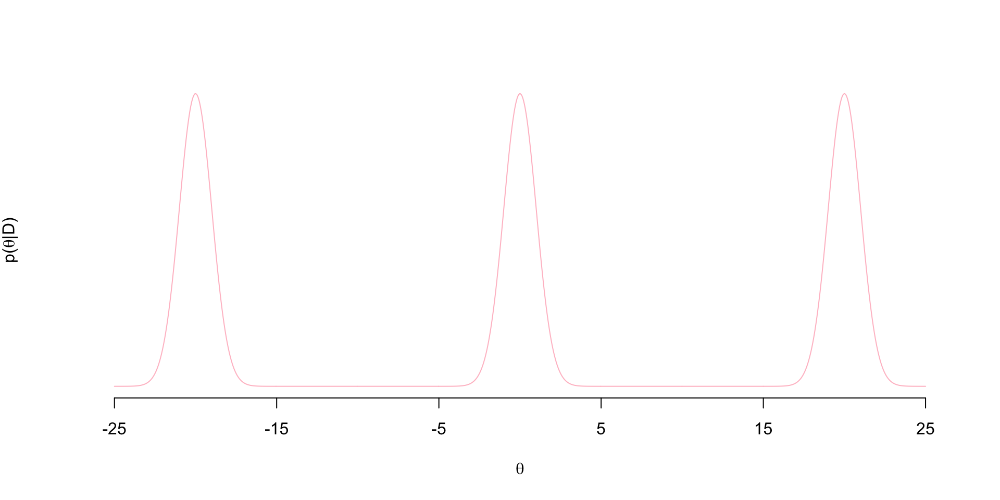
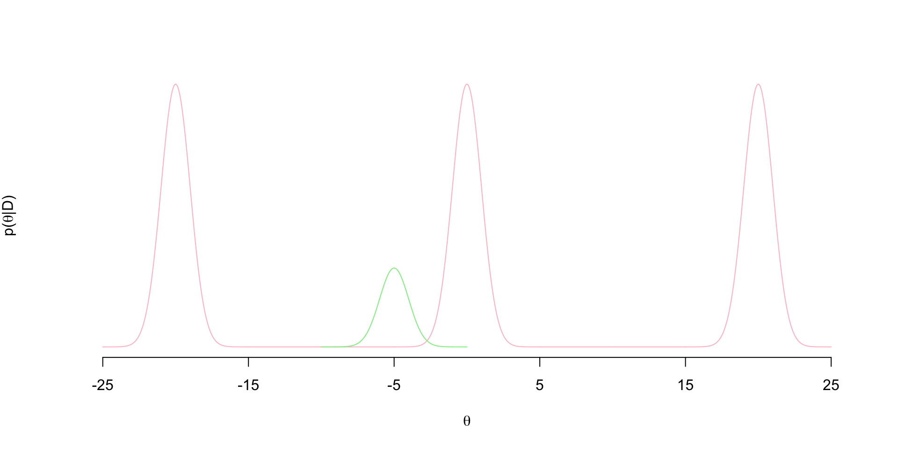
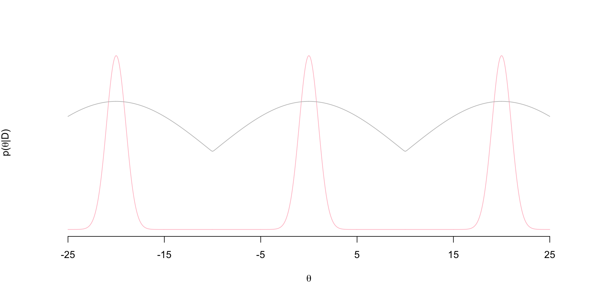
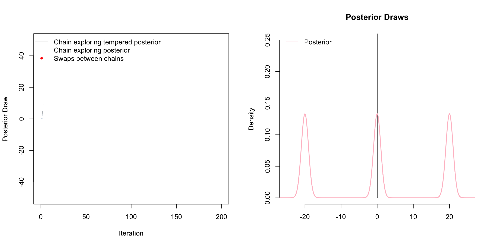

This is part of a sequence of posts chronicling my journey to manually implement as many MCMC samplers as I can from scratch. Code from previous psots can be found on GitHub. Also I tweet more than I should: StableMarkets.
I wanted to write up my own implementation of coupled MCMC chains using a tempered posterior along with an animation of the process. This is a classic sampling strategy used to deal with multi-modal posteriors. Here I have a tri-modal target posterior:
\[ p(\theta \mid D) = \frac{1}{3}N(-20,1) + \frac{1}{3}N(0,1) + \frac{1}{3}N(20,1)\] The density looks like this

Notice the regions of flat posterior density at about \((-15,-5)\) and \((5,15)\)…these are often referred to as “bottlenecks”.
These bottlenecks causes standard MCMC algorithms like Metropolis-Hastings (MH) to get stuck at one of these modes. Suppose at iteration \(t\) of a standard MH sampler, the current value of the parameter is \(\theta^{(t-1)}= - 5\). Suppose we use a Gaussian jumping distribution, so that we propose \(\theta^{(t)}\) from \(\theta^{(t)} \sim N( -5, \sigma)\). Let’s say that \(\sigma=1\) so the proposal distribution is proportional to the green density below

It’s clear here that we’re almost never going to propose draws from the other two modes from this jumping distribution. Vast majority of the proposals to the left will end up in the bottlenecks and get rejected. We could increase \(\sigma\) to make the proposal distribution is wide enough to jump over these bottlenecks. However, we know in MH that increasing \(\sigma\) tends to reduce acceptance probability in general. So maybe that helps us explore the other two modes, but we won’t be accepting frequently - slowing down how efficiently the chain explores the posterior.
The idea behind tempering is to have two chains: one that is exploring the tempered posterior and another that explores the posterior. Ideally, the tempered posterior won’t have these bottlenecks, so a chain exploring it won’t have trouble getting from mode to mode. Then, we can propose jumps of the chain exploring the posterior to the tempered chain. This increases the chance of our chain of interest jumping to other modes.
So when we say “tempered” we mean raising the posterior to some power (temperature) \(T\): \(p(\theta \mid D)^T\). Let’s see what \(p(\theta \mid D)^T\) looks like (proportional to gray density):
 Notice that the tempered posterior has no bottlenecks. So an MH chain exploring this distribution won’t get stuck in bottlenecks of the posterior. So now we set up two chains: one exploring the tempered posterior and another exploring the posterior - both with standard MH updates. In each iteration, once we’ve update the two chains, we propose a swap between the two chains that is accepted with some probability. We say that the chains “meet” when these swaps occur. That is, we’ve in a sense “coupled” the chains.
Above is a gif of this playing out over 200 iterations. The gray chain is the standard MH chain (not including the swaps) that explores the tempered distribution. The blue chain is the chain exploring the posterior. The red dots indicate values of the blue chain that are swaps from the tempered chain. I.e. at these red points, the chains meet. Notice that the blue chain now easily hops between the modes by occasionally jumping to the gray chain.

How this scales to higher dimensions was a topic of much research - still sort of is. The choice of temperatures is crucial. Often, we need to use several chains, not just two chains as we did here.
Some references: Altekar (2004) is a nice outline and has references to seminal works by Geyers, Gilks and Roberts, etc. I based my sampler on the math they provide in the paper. Also this post by Darren Wilkinson on MH coupled MCMC is a really nice treatment on this topic as well.